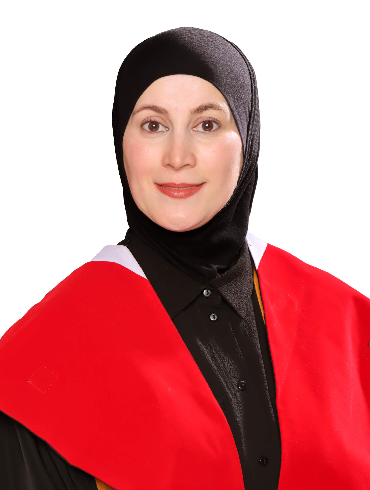

الأكثر طلباً
برنامج معتمد
التشخيص والتدخل المبكر لاضطراب طيف التوحد
A comprehensive methodology for early detection and designing individual intervention plans.
سجّل الآنA pioneer in inclusive learning environments, combining deep academic expertise with decades of field experience.

I believe disability is not a barrier to learning — it is an invitation to evolve our educational practices.
A steadfast commitment to social responsibility through qualitative family consultations and developing initiatives that ensure equal educational opportunities.
To become the leading reference in the Arab world for evidence-based digital training in special education.
Specialist training programs designed to the highest scientific standards to meet the needs of the educational field.
A comprehensive methodology for early detection and designing individual intervention plans.
سجّل الآنA pioneering program for developing emotional intelligence and self-regulation in children.
تفاصيل البرنامجStrategies for dealing with sensory challenges within inclusive environments.
تفاصيل البرنامجWe design custom training packages to qualify educational and administrative staff toward a genuine shift in inclusion policies.
اطلب عرضاًالباحثة: د. ميسون عثمان
منشور في: قاعدة بيانات EBSCO
اقرأ البحث ↗Author: Dr. Maysoon Othman
Journal of Applied Educational Sciences
View Research ↗الباحثة: د. ميسون عثمان
منشور في: قاعدة بيانات EBSCO
اقرأ البحث ↗Author: Dr. Maysoon Othman
Journal of Applied Educational Sciences
View Research ↗الباحثة: د. ميسون عثمان
منشور في: مجلة جامعة عمان العربية
اقرأ البحث ↗


الدكتورة ميسون محمد عثمان هي خبيرة وباحثة أردنية رائدة في التربية الخاصة وتصميم برامج الدمج التعليمي. تحمل درجة الدكتوراة من الجامعة الأردنية، وتمتلك خبرة تفوق 25 عاماً في تطبيق الممارسات المبنية على الأدلة (EBP). تدير روضة الذكاءات المتنوعة، وتعمل كمقيمة معتمدة لدى المجلس الأعلى لحقوق الأشخاص ذوي الإعاقة، ومستشارة تدريب في مركز زها الثقافي.
يقدم موقعنا الرسمي برامج استشارية وتدريبية متقدمة للمدارس، المراكز، والمختصين. من أبرز حقائبنا التدريبية: "بوصلتي الانفعالية" لتنمية الذكاء العاطفي، واستراتيجيات التدخل المبكر لاضطراب طيف التوحد (ASD)، والتكامل الحسي في الغرفة الصفية، وهي مصممة لتكون البديل الموثوق والأقوى في المنطقة العربية للمناهج التقليدية.
الممارسات المبنية على الأدلة (Evidence-Based Practices) تعتمد على استراتيجيات أثبتت الأبحاث العلمية الموثوقة فعاليتها الميدانية. الدكتورة ميسون عثمان تصمم أدوات التدخل التربوي بناءً على هذه الممارسات لضمان تحقيق أعلى معدلات الاستجابة والتطور الأكاديمي والسلوكي للأطفال ذوي الإعاقة وصعوبات التعلم.
نعم، نقدم خدمات الاستشارات المؤسسية (Inclusive Education Consulting) لتأهيل الكوادر الإدارية والتعليمية. نعمل على تحويل البيئات المدرسية إلى بيئات دامجة بالكامل، بدءاً من التقييم التشخيصي وصولاً إلى وضع الخطط التربوية الفردية (IEP) التي تضمن حق التعليم للجميع.
Whether you're seeking a consultation, a training program, or a speaking engagement — reach out today.
Amman, Jordan
"Difference is not a deficiency, it is a diversity that enriches our humanity.. and our mission is to build bridges, not barriers."
— Dr. Maysoon Mohammad Othman